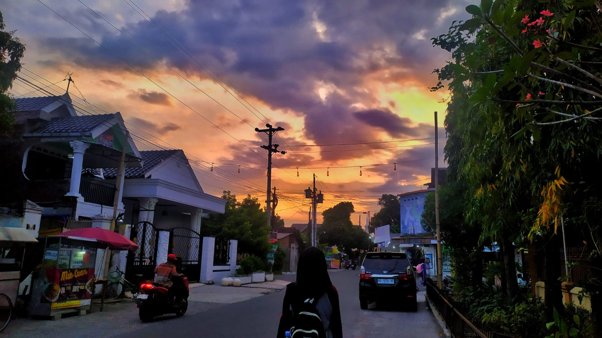

👤 Biodata Diri
Kenali aku lebih dekat melalui biodata berikut.

✨ Data Diri
Nama
Ganita Hayu Uno
Kelas
XII TJKT 1
Sekolah
SMKN 9 Surakarta
Agama
Islam
Tempat, Tanggal Lahir
Karanganyar, 30 April 2009
Alamat
Banukan